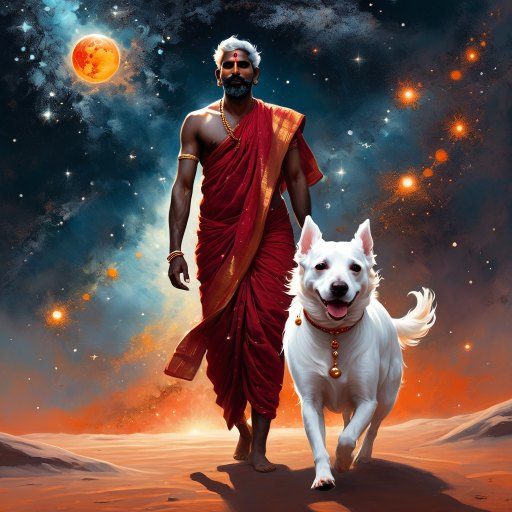

30Shri Kali Tandava Stotram: translation and commentary
Nine verses, one down each: her corpse-mount, her garland of severed heads, the smoke of the last fire. The bīja "Huṃ" runs through the first line.
Kali · stotram7 Nov 2025 · 12 min